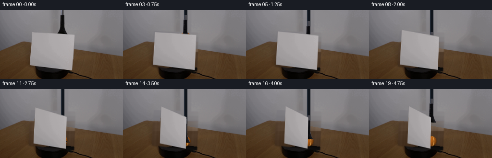
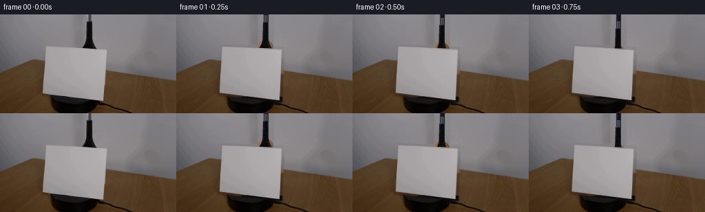

CODING AGENTS AS PIXEL WORLD MODELS
traex/GPT-5.6-Sol · 0006
点击播放 · 原生 RGB 像素
逐轮保存的候选
回放视频、检查图与代码变化。
每份候选均可单独播放。实际图片检查记录在下方工具轨迹中。
候选 01播放与检查图
点击播放 · 原生 RGB 像素


展开代码变化
--- 上一保存版本
+++ 本次保存版本
@@ -0,0 +1,249 @@
+from pathlib import Path
+import math
+import cv2
+import numpy as np
+from PIL import Image
+import artifact_io
+
+ROOT = Path(__file__).resolve().parent
+W, H = 256, 144
+N = 20
+
+
+def smoothstep(x):
+ x = max(0.0, min(1.0, float(x)))
+ return x*x*(3.0-2.0*x)
+
+
+def composite(dst, src, alpha):
+ """Alpha composite float/uint8 RGB src onto uint8 RGB dst."""
+ a = np.clip(alpha[..., None], 0.0, 1.0).astype(np.float32)
+ out = dst.astype(np.float32)*(1-a) + src.astype(np.float32)*a
+ return np.clip(out + 0.5, 0, 255).astype(np.uint8)
+
+
+def feathered_polygon(points, blur=1.0, expand=0):
+ scale = 4
+ m = np.zeros((H*scale, W*scale), np.uint8)
+ p = np.rint(np.asarray(points)*scale).astype(np.int32)
+ cv2.fillConvexPoly(m, p, 255, lineType=cv2.LINE_AA)
+ if expand:
+ k = 2*expand*scale+1
+ m = cv2.dilate(m, np.ones((k, k), np.uint8))
+ m = cv2.resize(m, (W,H), interpolation=cv2.INTER_AREA).astype(np.float32)/255.0
+ if blur:
+ m = cv2.GaussianBlur(m, (0,0), blur)
+ return np.clip(m,0,1)
+
+
+def clean_plate(im):
+ """Reconstruct only the wall/table hidden by the original screen and tool."""
+ yy, xx = np.mgrid[0:H, 0:W]
+ synth = im.astype(np.float32).copy()
+ # Back edge of the wooden tabletop, inferred from the two visible segments.
+ horizon = 55.0 + 0.166*xx
+
+ # Row colors interpolated from unobstructed strips on both sides.
+ left = np.zeros((H,3), np.float32)
+ right = np.zeros((H,3), np.float32)
+ for y in range(H):
+ left[y] = np.median(im[y, 30:56], axis=0)
+ right[y] = np.median(im[y, 168:218], axis=0)
+ mix = np.clip((xx-56)/112.0, 0, 1)[...,None]
+ rowcol = left[yy]*(1-mix) + right[yy]*mix
+
+ # Wall is smooth but retains the original low-contrast camera texture.
+ wall = rowcol.copy()
+ wall += (1.2*np.sin(xx*.073 + yy*.041) + .7*np.sin(xx*.21-yy*.09))[...,None]
+
+ # Wood color sampled from both visible sides, with subtle grain.
+ wood = rowcol.copy()
+ # At rows near the horizon one side can still be wall: impose the measured
+ # warm walnut chromatic relation while retaining row luminance.
+ lum = wood.mean(axis=2)
+ wood[:,:,0] = lum + 12
+ wood[:,:,1] = lum - 8
+ wood[:,:,2] = lum - 25
+ grain = 2.2*np.sin(xx*.31 + .6*np.sin(yy*.13)) + 1.1*np.sin(xx*.89+yy*.05)
+ wood += grain[...,None]
+ base = np.where((yy < horizon)[...,None], wall, wood)
+
+ # Black oval turntable/platform underneath the upright screen.
+ ex = (xx-124.0)/58.0
+ ey = (yy-136.0)/18.5
+ platform = ex*ex + ey*ey <= 1.0
+ edge = np.clip(1.0-(ex*ex+ey*ey),0,1)
+ pc = np.empty_like(base)
+ pc[:,:,0] = 7 + 13*edge
+ pc[:,:,1] = 7 + 11*edge
+ pc[:,:,2] = 7 + 10*edge
+ base = np.where(platform[...,None], pc, base)
+
+ old_card = feathered_polygon([(66,46),(155,49),(152,126),(62,115)], blur=.8, expand=2)
+ old_tool = np.zeros((H,W),np.float32)
+ cv2.rectangle(old_tool,(119,0),(141,51),1.0,-1)
+ old_tool = cv2.GaussianBlur(old_tool,(0,0),1.0)
+ removal = np.maximum(old_card, old_tool)
+ return composite(im, np.clip(base,0,255).astype(np.uint8), removal)
+
+
+def make_card_assets(im):
+ # Remove the tiny overlap of the grabber from the upper edge of the source
+ # texture, replacing it with nearby cardstock samples.
+ tex = im.copy()
+ for y in range(45,54):
+ # the paper tone on each side of the tool
+ c1 = im[min(y,52),108:116].mean(axis=0)
+ c2 = im[min(y,52),142:150].mean(axis=0)
+ for x in range(117,142):
+ u=(x-117)/24
+ tex[y,x]=np.clip(c1*(1-u)+c2*u,0,255)
+ src = np.float32([[66,47],[153,50],[150,125],[63,114]])
+ mask = feathered_polygon(src, blur=.28, expand=0)
+ return tex, mask, src
+
+
+def card_quad(angle_deg):
+ """Perspective projection of an upright card yawing clockwise."""
+ src = np.float32([[66,47],[153,50],[150,125],[63,114]])
+ axis_x, axis_y, focal = 108.0, 119.0, 260.0
+ a=math.radians(angle_deg)
+ out=[]
+ for x,y in src:
+ X=x-axis_x
+ z=X*math.sin(a)
+ scale=focal/(focal+z)
+ xp=axis_x + X*math.cos(a)*scale
+ yp=axis_y + (y-axis_y)*scale
+ out.append((xp,yp))
+ return np.float32(out)
+
+
+def warp_card(tex, mask, srcquad, dstquad):
+ M=cv2.getPerspectiveTransform(srcquad,dstquad)
+ rgb=cv2.warpPerspective(tex,M,(W,H),flags=cv2.INTER_CUBIC,borderMode=cv2.BORDER_CONSTANT)
+ a=cv2.warpPerspective(mask,M,(W,H),flags=cv2.INTER_LINEAR,borderMode=cv2.BORDER_CONSTANT)
+ return rgb, np.clip(a,0,1)
+
+
+def ball_layer(cx,cy,r,opacity=1.0):
+ # Analytically shaded fuzzy tennis ball with a curved cream seam.
+ yy,xx=np.mgrid[0:H,0:W]
+ dx=(xx+.5-cx)/r; dy=(yy+.5-cy)/r
+ rr=dx*dx+dy*dy
+ edge=np.clip((1.075-np.sqrt(rr))*10.0,0,1)
+ inside=rr<=1.16
+ z=np.sqrt(np.clip(1-rr,0,1))
+ light=np.clip(.58 + .34*(-.45*dx-.55*dy+.70*z),.28,1.08)
+ # Fine deterministic felt variation.
+ felt=1 + .035*np.sin(xx*2.17+yy*.91)+.022*np.sin(xx*.71-yy*2.39)
+ base=np.zeros((H,W,3),np.float32)
+ base[:,:,0]=210*light*felt
+ base[:,:,1]=112*light*felt
+ base[:,:,2]=25*light*felt
+ # Warm reflected light toward the bottom.
+ base[:,:,0]+=np.clip(dy,0,1)*8
+ base[:,:,1]+=np.clip(dy,0,1)*3
+
+ # Familiar tennis-ball curved seam, visible mostly on the right side.
+ seam_dist=np.abs(dx - (.50-.26*dy*dy))
+ seam=(seam_dist<.075)&(rr<.88)
+ seam_soft=np.clip((.09-seam_dist)/.055,0,1)*edge
+ seam_col=np.zeros_like(base); seam_col[:]=[238,179,92]
+ base=base*(1-seam_soft[...,None]*.75)+seam_col*(seam_soft[...,None]*.75)
+ # Specular pinprick on the upper left.
+ hi=np.exp(-((dx+.34)**2+(dy+.38)**2)/.035)
+ base += hi[...,None]*np.array([24,20,12])
+ alpha=edge*inside*opacity
+ return np.clip(base,0,255).astype(np.uint8),alpha
+
+
+def tool_asset(im, clean):
+ # Alpha recovered from how much darker the object is than the reconstructed wall.
+ src=im.copy()
+ lum=.299*src[:,:,0]+.587*src[:,:,1]+.114*src[:,:,2]
+ bg=.299*clean[:,:,0]+.587*clean[:,:,1]+.114*clean[:,:,2]
+ a=np.clip((bg-lum-5)/48,0,1)
+ region=np.zeros((H,W),np.float32); region[:52,117:143]=1
+ a*=region
+ a=cv2.GaussianBlur(a,(0,0),.32)
+ # Retain the photographed near-black colors with a restrained blue tint.
+ tint=src.astype(np.int16); tint[:,:,2]=np.clip(tint[:,:,2]+3,0,255)
+ return tint.astype(np.uint8),a
+
+
+def move_tool(frame, tool_rgb, tool_alpha, displacement):
+ d=int(round(displacement))
+ M=np.float32([[1,0,0],[0,1,d]])
+ rgb=cv2.warpAffine(tool_rgb,M,(W,H),flags=cv2.INTER_LINEAR,borderMode=cv2.BORDER_CONSTANT)
+ a=cv2.warpAffine(tool_alpha,M,(W,H),flags=cv2.INTER_LINEAR,borderMode=cv2.BORDER_CONSTANT)
+ # Shaft enters from above and remains continuous as the jaws move down.
+ if d>0:
+ shaft=np.zeros((H,W),np.float32)
+ cv2.rectangle(shaft,(127,0),(133,d+12),1,-1,lineType=cv2.LINE_AA)
+ shaft=cv2.GaussianBlur(shaft,(0,0),.5)
+ sc=np.zeros_like(frame); sc[:]=[11,16,23]
+ # narrow cool highlight down the left side
+ sc[:,127:129]=[24,32,42]
+ frame=composite(frame,sc,shaft*.96)
+ return composite(frame,rgb,a)
+
+
+def generate():
+ first=np.array(Image.open(ROOT/'first_frame.png').convert('RGB'),dtype=np.uint8)
+ assert first.shape==(H,W,3)
+ clean=clean_plate(first)
+ card_tex,card_mask,srcquad=make_card_assets(first)
+ tool_rgb,tool_alpha=tool_asset(first,clean)
+ frames=[first.copy()]
+
+ for i in range(1,N):
+ t=i/(N-1)
+ # A steady clockwise yaw. A slight eased start avoids a mechanical jerk.
+ angle=58.0*smoothstep(min(1,t/0.90))
+ quad=card_quad(angle)
+ frame=clean.copy()
+
+ # Soft moving contact/cast shadow just behind the card's lower edge.
+ bottom=np.array([quad[3],quad[2]],np.float32)
+ shadow_pts=np.array([bottom[0]+[1,1],bottom[1]+[2,1],bottom[1]+[12,7],bottom[0]+[9,7]])
+ sh=feathered_polygon(shadow_pts,blur=2.0)
+ dark=np.zeros_like(frame); dark[:]=[24,18,13]
+ frame=composite(frame,dark,sh*.22)
+
+ # Lower through the first 3 seconds, release, then withdraw the grabber.
+ if i<=12:
+ down=62.0*smoothstep(i/12)
+ ball_y=47.0+down
+ else:
+ down=62.0
+ ball_y=109.0
+ if i>=15:
+ down=62.0-42.0*smoothstep((i-15)/4)
+
+ # Increasing contact shadow as the ball approaches the platform/table.
+ yy,xx=np.mgrid[0:H,0:W]
+ contact=np.exp(-(((xx-132)/14)**2+((yy-119)/3.8)**2))
+ contact*=smoothstep((ball_y-76)/33)*.34
+ frame=composite(frame,np.zeros_like(frame)+np.array([17,12,8],np.uint8),contact)
+
+ # Frame 1 reveals only a subdued orange rim around the photographed jaws;
+ # it immediately descends behind the card instead of popping into view.
+ op=.62 if i==1 else 1.0
+ brgb,ba=ball_layer(130.0,ball_y,10.5,op)
+ frame=composite(frame,brgb,ba)
+ frame=move_tool(frame,tool_rgb,tool_alpha,down)
+
+ # Foreground cardstock provides the essential occlusion.
+ crgb,ca=warp_card(card_tex,card_mask,srcquad,quad)
+ frame=composite(frame,crgb,ca)
+ frames.append(frame)
+
+ arr=np.stack(frames).astype(np.uint8)
+ assert np.array_equal(arr[0],first)
+ artifact_io.save(arr,ROOT)
+ return arr
+
+
+if __name__=='__main__':
+ generate()
可观测工具轨迹
实际执行的命令与返回图片。
命令 1exit 0
/bin/bash -lc "cat GENERATION_RULES.md && printf '\\n---PROMPT---\\n' && cat prompt.txt"
命令 2exit 127
/bin/bash -lc "find . -maxdepth 2 -type f -printf '%p\\n' | sort && file first_frame.png"
命令 3exit 0
/bin/bash -lc "sed -n '1,240p' artifact_io.py"
命令 4exit 0
/bin/bash -lc "python - <<'PY'
from PIL import Image
import numpy as np
im=np.array(Image.open('first_frame.png').convert('RGB'))
# coarse char representation based on nearest semantic-ish luminance/color; print 64x36 sampling block averages
for yy in range(36):
s=''
for xx in range(64):
p=im[yy*4:(yy+1)*4,xx*4:(xx+1)*4].mean((0,1)); r,g,b=p; lum=p.mean()
if r>1.35*b and r>1.15*g and r>100: ch='O'
elif b>1.2*r and b>1.08*g and b>60: ch='B'
elif lum<35: ch='#'
elif lum<65: ch='@'
elif lum<100: ch='x'
elif lum<140: ch='+'
elif lum<180: ch='-'
elif lum<220: ch='.'
else: ch=' '
s+=ch
print(s)
PY"命令 5exit 0
/bin/bash -lc "python - <<'PY'
from PIL import Image
import numpy as np
im=np.array(Image.open('first_frame.png').convert('RGB'))
print(im.shape,im.dtype, im.min((0,1)),im.max((0,1)),im.mean((0,1)))
# clusters using kmeans
from sklearn.cluster import KMeans
X=im.reshape(-1,3)[::4]
km=KMeans(12,random_state=0,n_init=5).fit(X)
for c,n in sorted(zip(km.cluster_centers_,np.bincount(km.labels_)),key=lambda z:-z[1]):print(n,np.rint(c).astype(int))
PY"命令 6exit 0
/bin/bash -lc "python - <<'PY'
from PIL import Image
import numpy as np
from scipy.ndimage import label
im=np.array(Image.open('first_frame.png').convert('RGB')); mx=im.max(2); mn=im.min(2); ch=mx-mn
for q in [50,75,90,95,97,99,99.5,99.9]: print('chroma',q,np.percentile(ch,q))
for name,a in [('R-G',im[:,:,0].astype(int)-im[:,:,1]),('R-B',im[:,:,0].astype(int)-im[:,:,2]),('B-R',im[:,:,2].astype(int)-im[:,:,0]),('B-G',im[:,:,2].astype(int)-im[:,:,1])]:
flat=np.argsort(a.ravel())[-30:]; ys,xs=np.unravel_index(flat,a.shape); print(name,'max',a[ys[-1],xs[-1]],'coords',list(zip(xs[-10:],ys[-10:],a[ys[-10:],xs[-10:]])))
# top chroma colors
ids=np.argsort(ch.ravel())[-80:]; ys,xs=np.unravel_index(ids,ch.shape)
print('top chroma');
for x,y in zip(xs[-30:],ys[-30:]):print((x,y),im[y,x].tolist(),int(ch[y,x]))
PY"命令 7exit 0
/bin/bash -lc "python - <<'PY'
from PIL import Image
import numpy as np
im=np.array(Image.open('first_frame.png').convert('RGB'))
# pixel samples grid every 8, map luminance to chars more detailed and color uppercase
chars=' .,:;irsXA253hMHGS#9B&@'
for y in range(0,144,4):
s=''
for x in range(0,256,4):
p=im[y:y+4,x:x+4].mean((0,1)); lum=.299*p[0]+.587*p[1]+.114*p[2]
s+=chars[min(len(chars)-1,int(lum/256*len(chars)))]
print(s)
PY"命令 8exit 0
/bin/bash -lc "python - <<'PY'
from PIL import Image
import numpy as np
from scipy.ndimage import sobel
im=np.array(Image.open('first_frame.png').convert('RGB')).mean(2)
g=np.hypot(sobel(im,0),sobel(im,1))
# summarize rows/cols avg gradients and lum
for axis,n in [(0,256),(1,144)]:
z=g.mean(axis); l=im.mean(axis)
idx=np.argsort(z)[-20:]
print('axis',axis,'grad tops',sorted([(int(i),round(z[i],1),round(l[i],1)) for i in idx]))
# per block RGB avg 16 x 12 -> 16 cols x 12 rows
rgb=np.array(Image.open('first_frame.png').convert('RGB'))
for by in range(0,144,12):
print('row',by,end=' ')
for bx in range(0,256,16):
p=rgb[by:by+12,bx:bx+16].mean((0,1)).round().astype(int)
print('%02x%02x%02x'%tuple(p),end=' ')
print()
PY"命令 9exit 0
/bin/bash -lc "python - <<'PY'
import cv2,numpy as np
im=cv2.imread('first_frame.png'); gray=cv2.cvtColor(im,cv2.COLOR_BGR2GRAY)
ed=cv2.Canny(gray,20,50)
# morphology then contours
for t in [10,20,30,40,60]:
e=cv2.Canny(gray,t,t*2.5)
cs,_=cv2.findContours(e,cv2.RETR_LIST,cv2.CHAIN_APPROX_SIMPLE)
print('\\nT',t)
for c in sorted(cs,key=cv2.contourArea,reverse=True)[:20]:
a=cv2.contourArea(c); x,y,w,h=cv2.boundingRect(c)
if a>5: print(round(a,1),(x,y,w,h),round(cv2.arcLength(c,True),1))
# ascii edges 2x2 max, 128x72 too much, 4x2 =>64x72
print('EDGE')
for y in range(0,144,2):
print(''.join('#' if ed[y:y+2,x:x+4].any() else ' ' for x in range(0,256,4)))
PY"命令 10exit 0
/bin/bash -lc "python - <<'PY'
from PIL import Image
import numpy as np
im=np.array(Image.open('first_frame.png').convert('RGB'))
# dump center samples every 2 px (x100:170 y0:80), symbols by exact local semantic thresholds
for y in range(0,80,2):
s=''
for x in range(90,180,2):
p=im[y:y+2,x:x+2].mean((0,1)); r,g,b=p; lum=.299*r+.587*g+.114*b
# deviations from row median background
bg=np.median(im[y:y+2],axis=(0,1)); d=np.linalg.norm(p-bg)
if lum<30:c='#'
elif lum<60:c='@'
elif lum<90:c='X'
elif lum<115:c='x'
elif lum<135:c='+'
elif lum<150:c='-'
elif lum<170:c='.'
else:c=' '
s+=c
print(f'{y:03d} '+s)
PY"命令 11exit 0
/bin/bash -lc "python - <<'PY'
from PIL import Image
import numpy as np
im=np.array(Image.open('first_frame.png').convert('RGB'))
# exact rows runs in luminance categories for central image
for y in range(0,144,4):
a=im[y:y+4].mean((0,1)); # no
vals=[]
for x in range(0,256,4): vals.append(im[y:y+4,x:x+4].mean())
# run-length quantization bins
q=np.digitize(vals,[30,60,90,120,145,165]); runs=[]; st=0
for i in range(1,65):
if i==64 or q[i]"'!=q[st]:
if i-st>=2:runs.append((st*4,i*4,int(q[st])))
st=i
print(y,runs)
PY'命令 12exit 0
/bin/bash -lc "python - <<'PY'
from PIL import Image
import numpy as np
im=np.array(Image.open('first_frame.png').convert('RGB'))
for y in range(0,55,2):
print(y,[(x,im[y,x].tolist()) for x in range(116,145,2)])
PY"命令 13exit 0
/bin/bash -lc "python - <<'PY'
import cv2, numpy as np
im=cv2.imread('first_frame.png')
# print major line segments
G=cv2.cvtColor(im,cv2.COLOR_BGR2GRAY); ls=cv2.HoughLinesP(cv2.Canny(G,20,50),1,np.pi/180,20,minLineLength=12,maxLineGap=5)
for z in ls[:,0]: print(z.tolist())
PY"命令 14exit 0
/bin/bash -lc "python - <<'PY'
from PIL import Image
import numpy as np
im=np.array(Image.open('first_frame.png').convert('RGB'))
# save magnified nearest crops for potential file (can't visually see) plus report stats regions
for name,box in [('tool',(110,0,150,60)),('card',(55,42,165,130)),('platform',(65,110,205,144))]:
x1,y1,x2,y2=box;a=im[y1:y2,x1:x2];Image.fromarray(a).resize(((x2-x1)*8,(y2-y1)*8)).save('.tmp/'+name+'.png')
print(name,'mean',a.mean((0,1)),'min',a.min((0,1)),'max',a.max((0,1)))
PY"命令 15exit 0
/bin/bash -lc "cat > generate.py <<'PY'
from pathlib import Path
import math
import cv2
import numpy as np
from PIL import Image
import artifact_io
ROOT = Path(__file__).resolve().parent
W, H = 256, 144
N = 20
def smoothstep(x):
x = max(0.0, min(1.0, float(x)))
return x*x*(3.0-2.0*x)
def composite(dst, src, alpha):
\"\"\"Alpha composite float/uint8 RGB src onto uint8 RGB dst.\"\"\"
a = np.clip(alpha[..., None], 0.0, 1.0).astype(np.float32)
out = dst.astype(np.float32)*(1-a) + src.astype(np.float32)*a
return np.clip(out + 0.5, 0, 255).astype(np.uint8)
def feathered_polygon(points, blur=1.0, expand=0):
scale = 4
m = np.zeros((H*scale, W*scale), np.uint8)
p = np.rint(np.asarray(points)*scale).astype(np.int32)
cv2.fillConvexPoly(m, p, 255, lineType=cv2.LINE_AA)
if expand:
k = 2*expand*scale+1
m = cv2.dilate(m, np.ones((k, k), np.uint8))
m = cv2.resize(m, (W,H), interpolation=cv2.INTER_AREA).astype(np.float32)/255.0
if blur:
m = cv2.GaussianBlur(m, (0,0), blur)
return np.clip(m,0,1)
def clean_plate(im):
\"\"\"Reconstruct only the wall/table hidden by the original screen and tool.\"\"\"
yy, xx = np.mgrid[0:H, 0:W]
synth = im.astype(np.float32).copy()
# Back edge of the wooden tabletop, inferred from the two visible segments.
horizon = 55.0 + 0.166*xx
# Row colors interpolated from unobstructed strips on both sides.
left = np.zeros((H,3), np.float32)
right = np.zeros((H,3), np.float32)
for y in range(H):
left[y] = np.median(im[y, 30:56], axis=0)
right[y] = np.median(im[y, 168:218], axis=0)
mix = np.clip((xx-56)/112.0, 0, 1)[...,None]
rowcol = left[yy]*(1-mix) + right[yy]*mix
# Wall is smooth but retains the original low-contrast camera texture.
wall = rowcol.copy()
wall += (1.2*np.sin(xx*.073 + yy*.041) + .7*np.sin(xx*.21-yy*.09))[...,None]
# Wood color sampled from both visible sides, with subtle grain.
wood = rowcol.copy()
# At rows near the horizon one side can still be wall: impose the measured
# warm walnut chromatic relation while retaining row luminance.
lum = wood.mean(axis=2)
wood[:,:,0] = lum + 12
wood[:,:,1] = lum - 8
wood[:,:,2] = lum - 25
grain = 2.2*np.sin(xx*.31 + .6*np.sin(yy*.13)) + 1.1*np.sin(xx*.89+yy*.05)
wood += grain[...,None]
base = np.where((yy < horizon)[...,None], wall, wood)
# Black oval turntable/platform underneath the upright screen.
ex = (xx-124.0)/58.0
ey = (yy-136.0)/18.5
platform = ex*ex + ey*ey <= 1.0
edge = np.clip(1.0-(ex*ex+ey*ey),0,1)
pc = np.empty_like(base)
pc[:,:,0] = 7 + 13*edge
pc[:,:,1] = 7 + 11*edge
pc[:,:,2] = 7 + 10*edge
base = np.where(platform[...,None], pc, base)
old_card = feathered_polygon([(66,46),(155,49),(152,126),(62,115)], blur=.8, expand=2)
old_tool = np.zeros((H,W),np.float32)
cv2.rectangle(old_tool,(119,0),(141,51),1.0,-1)
old_tool = cv2.GaussianBlur(old_tool,(0,0),1.0)
removal = np.maximum(old_card, old_tool)
return composite(im, np.clip(base,0,255).astype(np.uint8), removal)
def make_card_assets(im):
# Remove the tiny overlap of the grabber from the upper edge of the source
# texture, replacing it with nearby cardstock samples.
tex = im.copy()
for y in range(45,54):
# the paper tone on each side of the tool
c1 = im[min(y,52),108:116].mean(axis=0)
c2 = im[min(y,52),142:150].mean(axis=0)
for x in range(117,142):
u=(x-117)/24
tex[y,x]=np.clip(c1*(1-u)+c2*u,0,255)
src = np.float32([[66,47],[153,50],[150,125],[63,114]])
mask = feathered_polygon(src, blur=.28, expand=0)
return tex, mask, src
def card_quad(angle_deg):
\"\"\"Perspective projection of an upright card yawing clockwise.\"\"\"
src = np.float32([[66,47],[153,50],[150,125],[63,114]])
axis_x, axis_y, focal = 108.0, 119.0, 260.0
a=math.radians(angle_deg)
out=[]
for x,y in src:
X=x-axis_x
z=X*math.sin(a)
scale=focal/(focal+z)
xp=axis_x + X*math.cos(a)*scale
yp=axis_y + (y-axis_y)*scale
out.append((xp,yp))
return np.float32(out)
def warp_card(tex, mask, srcquad, dstquad):
M=cv2.getPerspectiveTransform(srcquad,dstquad)
rgb=cv2.warpPerspective(tex,M,(W,H),flags=cv2.INTER_CUBIC,borderMode=cv2.BORDER_CONSTANT)
a=cv2.warpPerspective(mask,M,(W,H),flags=cv2.INTER_LINEAR,borderMode=cv2.BORDER_CONSTANT)
return rgb, np.clip(a,0,1)
def ball_layer(cx,cy,r,opacity=1.0):
# Analytically shaded fuzzy tennis ball with a curved cream seam.
yy,xx=np.mgrid[0:H,0:W]
dx=(xx+.5-cx)/r; dy=(yy+.5-cy)/r
rr=dx*dx+dy*dy
edge=np.clip((1.075-np.sqrt(rr))*10.0,0,1)
inside=rr<=1.16
z=np.sqrt(np.clip(1-rr,0,1))
light=np.clip(.58 + .34*(-.45*dx-.55*dy+.70*z),.28,1.08)
# Fine deterministic felt variation.
felt=1 + .035*np.sin(xx*2.17+yy*.91)+.022*np.sin(xx*.71-yy*2.39)
base=np.zeros((H,W,3),np.float32)
base[:,:,0]=210*light*felt
base[:,:,1]=112*light*felt
base[:,:,2]=25*light*felt
# Warm reflected light toward the bottom.
base[:,:,0]+=np.clip(dy,0,1)*8
base[:,:,1]+=np.clip(dy,0,1)*3
# Familiar tennis-ball curved seam, visible mostly on the right side.
seam_dist=np.abs(dx - (.50-.26*dy*dy))
seam=(seam_dist<.075)&(rr<.88)
seam_soft=np.clip((.09-seam_dist)/.055,0,1)*edge
seam_col=np.zeros_like(base); seam_col[:]=[238,179,92]
base=base*(1-seam_soft[...,None]*.75)+seam_col*(seam_soft[...,None]*.75)
# Specular pinprick on the upper left.
hi=np.exp(-((dx+.34)**2+(dy+.38)**2)/.035)
base += hi[...,None]*np.array([24,20,12])
alpha=edge*inside*opacity
return np.clip(base,0,255).astype(np.uint8),alpha
def tool_asset(im, clean):
# Alpha recovered from how much darker the object is than the reconstructed wall.
src=im.copy()
lum=.299*src[:,:,0]+.587*src[:,:,1]+.114*src[:,:,2]
bg=.299*clean[:,:,0]+.587*clean[:,:,1]+.114*clean[:,:,2]
a=np.clip((bg-lum-5)/48,0,1)
region=np.zeros((H,W),np.float32); region[:52,117:143]=1
a*=region
a=cv2.GaussianBlur(a,(0,0),.32)
# Retain the photographed near-black colors with a restrained blue tint.
tint=src.astype(np.int16); tint[:,:,2]=np.clip(tint[:,:,2]+3,0,255)
return tint.astype(np.uint8),a
def move_tool(frame, tool_rgb, tool_alpha, displacement):
d=int(round(displacement))
M=np.float32([[1,0,0],[0,1,d]])
rgb=cv2.warpAffine(tool_rgb,M,(W,H),flags=cv2.INTER_LINEAR,borderMode=cv2.BORDER_CONSTANT)
a=cv2.warpAffine(tool_alpha,M,(W,H),flags=cv2.INTER_LINEAR,borderMode=cv2.BORDER_CONSTANT)
# Shaft enters from above and remains continuous as the jaws move down.
if d>0:
shaft=np.zeros((H,W),np.float32)
cv2.rectangle(shaft,(127,0),(133,d+12),1,-1,lineType=cv2.LINE_AA)
shaft=cv2.GaussianBlur(shaft,(0,0),.5)
sc=np.zeros_like(frame); sc[:]=[11,16,23]
# narrow cool highlight down the left side
sc[:,127:129]=[24,32,42]
frame=composite(frame,sc,shaft*.96)
return composite(frame,rgb,a)
def generate():
first=np.array(Image.open(ROOT/'first_frame.png').convert('RGB'),dtype=np.uint8)
assert first.shape==(H,W,3)
clean=clean_plate(first)
card_tex,card_mask,srcquad=make_card_assets(first)
tool_rgb,tool_alpha=tool_asset(first,clean)
frames=[first.copy()]
for i in range(1,N):
t=i/(N-1)
# A steady clockwise yaw. A slight eased start avoids a mechanical jerk.
angle=58.0*smoothstep(min(1,t/0.90))
quad=card_quad(angle)
frame=clean.copy()
# Soft moving contact/cast shadow just behind the card's lower edge.
bottom=np.array([quad[3],quad[2]],np.float32)
shadow_pts=np.array([bottom[0]+[1,1],bottom[1]+[2,1],bottom[1]+[12,7],bottom[0]+[9,7]])
sh=feathered_polygon(shadow_pts,blur=2.0)
dark=np.zeros_like(frame); dark[:]=[24,18,13]
frame=composite(frame,dark,sh*.22)
# Lower through the first 3 seconds, release, then withdraw the grabber.
if i<=12:
down=62.0*smoothstep(i/12)
ball_y=47.0+down
else:
down=62.0
ball_y=109.0
if i>=15:
down=62.0-42.0*smoothstep((i-15)/4)
# Increasing contact shadow as the ball approaches the platform/table.
yy,xx=np.mgrid[0:H,0:W]
contact=np.exp(-(((xx-132)/14)**2+((yy-119)/3.8)**2))
contact*=smoothstep((ball_y-76)/33)*.34
frame=composite(frame,np.zeros_like(frame)+np.array([17,12,8],np.uint8),contact)
# Frame 1 reveals only a subdued orange rim around the photographed jaws;
# it immediately descends behind the card instead of popping into view.
op=.62 if i==1 else 1.0
brgb,ba=ball_layer(130.0,ball_y,10.5,op)
frame=composite(frame,brgb,ba)
frame=move_tool(frame,tool_rgb,tool_alpha,down)
# Foreground cardstock provides the essential occlusion.
crgb,ca=warp_card(card_tex,card_mask,srcquad,quad)
frame=composite(frame,crgb,ca)
frames.append(frame)
arr=np.stack(frames).astype(np.uint8)
assert np.array_equal(arr[0],first)
artifact_io.save(arr,ROOT)
return arr
if __name__=='__main__':
generate()
PY
python generate.py
python - <<'PY'
import numpy as np
from PIL import Image
z=np.load('pixels.npz')['pixels']
print('pixels',z.shape,z.dtype)
a=np.array(Image.open('first_frame.png').convert('RGB')); b=np.array(Image.open('frames/00.png').convert('RGB'))
print('frame0 identical',np.array_equal(a,b))
for i in range(20):
im=np.array(Image.open(f'frames/{i:02d}.png'))
if i: prev=np.array(Image.open(f'frames/{i-1:02d}.png')); d=np.abs(im.astype(int)-prev.astype(int))
else:d=np.zeros_like(im)
print(i,im.mean().round(2),np.mean(d).round(2),np.max(d),np.count_nonzero(np.any(d,axis=2)))
PY"命令 16exit 0
/bin/bash -lc "python - <<'PY' import generate, numpy as np for i in range(20): a=58*generate.smoothstep(min(1,(i/19)/.90)); q=generate.card_quad(a) # ball visibility fraction not occluded by card alpha at its current center if i<=12: by=47+62*generate.smoothstep(i/12) else: by=109 print(i,round(a,1),np.round(q,1).tolist(),'ballY',round(by,1)) PY"
命令 17exit 0
/bin/bash -lc "python -m py_compile generate.py && ls -lh generate.py pixels.npz index.html inspection.png transition_check.png frames/00.png frames/19.png && python - <<'PY'
from PIL import Image
import numpy as np
fs=[]
for i in range(20):
a=np.array(Image.open(f'frames/{i:02d}.png'))
assert a.shape==(144,256,3) and a.dtype==np.uint8
fs.append(a)
assert np.array_equal(fs[0],np.array(Image.open('first_frame.png').convert('RGB')))
print('validated 20 RGB frames; exact first frame; unique frames:',len({x.tobytes() for x in fs}))
PY"保存候选 1 份；完成命令 17 次；可验证图片返回 0 张。原始 API 响应与完整日志保留在本地。